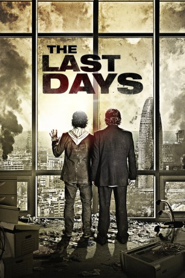

#7220 The Last Days - Tage der Panik
Alternativ: The Last Days (Englischer Titel)
 
 IMDB-Wertung: 6.2 / 10
IMDB-Wertung: 6.2 / 10  Metascore: 0
Metascore: 0 
Auf der Erde ist eine rätselhafte Epidemie ausgebrochen: Die Menschen werden von einer unergründlichen Angst befallen, ins Freie zu gehen. Verlassen sie geschlossene Räume, sterben sie an purer Panik. Es herrscht Ausnahmezustand – die Straßen sind leer gefegt, alle Versorgungswege zusammengebrochen. In diesem Chaos begibt sich Marc über Tunnelsysteme auf die Suche nach seiner Freundin Julia. Tief unter der Stadt herrscht das Recht des Stärkeren. Doch er ist bereit, alles zu riskieren …
Jahr: 2013
Dauer: 102 Minuten
FSK: 16
Land: Spanien Studio: Capelight PicturesTonspuren:
Untertitel: Deutsch,
Auflösung: 1080p (1920x808) Größe: 5181 MB
Genre: Thriller, Horror, Sci-Fi, Abenteuer
Regisseur: David Pastor, Àlex Pastor
Drehbuch: David Pastor
Soundtrack:
Darsteller:
- Quim Gutiérrez als Marc
- Jose Coronado als Enrique
 Marta Etura als Julia
Marta Etura als Julia Leticia Dolera als Andrea
Leticia Dolera als Andrea- Mikel Iglesias als Dani
- Ivan Massagué als Lucas
- Abdelatif Hwidar als Hombre Extranjero
- Isak Férriz als Javier
- Albert Prat als Toni
- Lluís Villanueva als Lluís
- Pep Sais als Experto 2
- Júlia Creus als
- Pere Ventura als Rovira
- Lluís Soler als Vecino
- Farah Hamed als Mujer Extranjera
- Lily Morett als Niña Extranjera
- Pere Brasó als Carlos
- Momo Ballesteros als Ángela
- Xavi Lite als Segurata 1
- Lolo Herrero als Segurata 2
- Jordi Gràcia als Josep
- Cristina Perales als Marta
- Robert Donaldson als Greg Lafferty
- Francesc Pagès als Portavoz Gobierno
- Chantal Aimée als Experto 1
- Josep Pla als Matón 1
- Xavi Ribas als Matón 2
- Pablo Capuz als underground Killer
- Jordi Basté als Locutor Radio , uncredited
- Jose Mellinas als (uncredited
- Xavier Muixí als (uncredited
- Tima als Bear , uncredited
Datei: X:\2013(I-M)\Last Days - Tage der Panik, The (2013, FSK16, 1920x808).mkv seit 09.10.2017
Festplatte: HD 2013(I-Z)-2014(A-Z)
 Es gibt insgesamt 89 Filme in der Gruppe '2013(I-M)'
Es gibt insgesamt 89 Filme in der Gruppe '2013(I-M)'